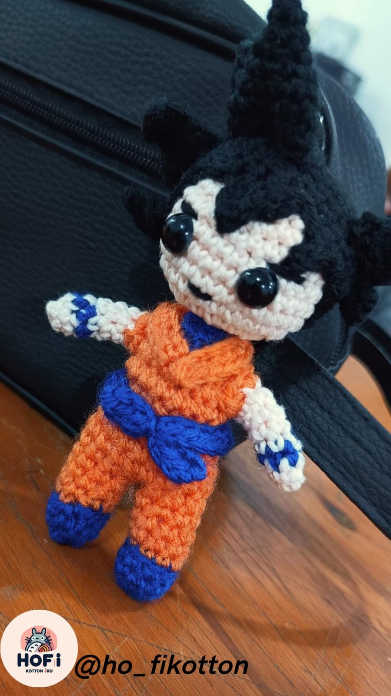
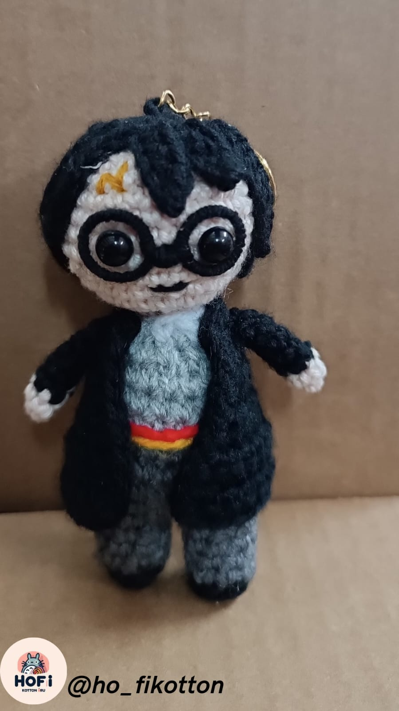
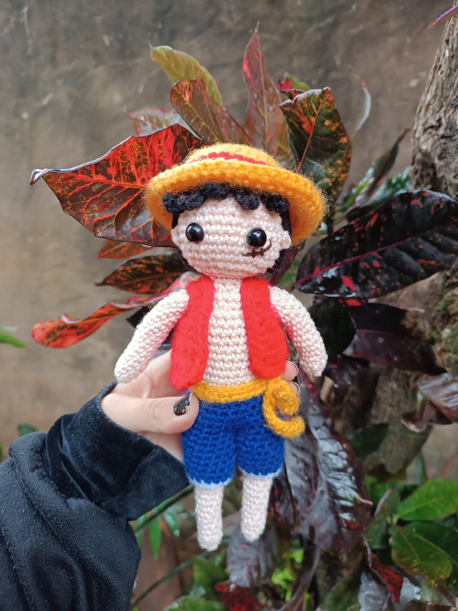
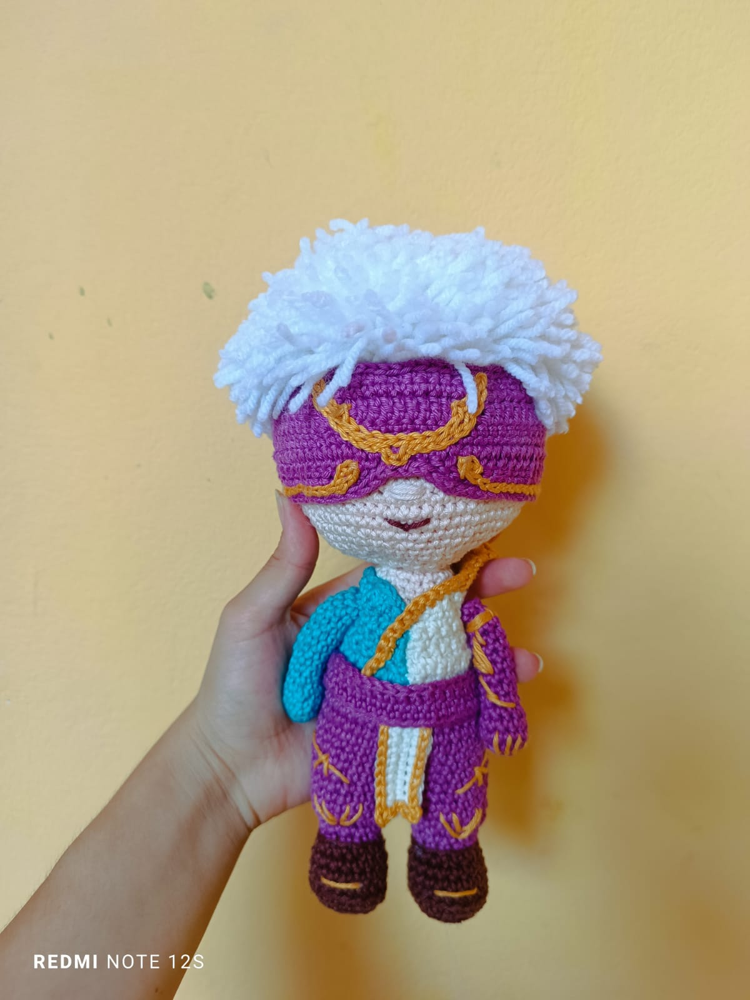
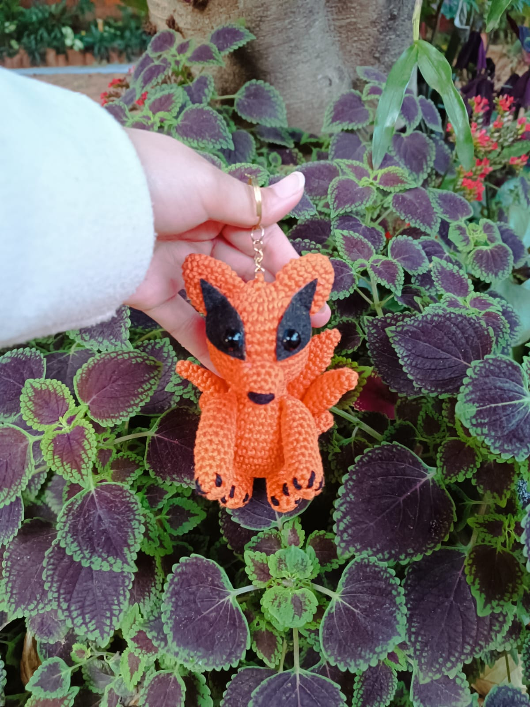

Son Goku, el Héroe de Dragon Ball Tejido con la energía de una Genki-dama, este amigurumi captura la esencia pura de Son Goku. Cada detalle, desde su clásico gi naranja de la Escuela Tortuga hasta el último mechón de su cabello Saiyajin, ha sido crochetado a mano. Es el compañero perfecto para proteger tu habitación de cualquier amenaza o simplemente para recordarte que siempre debes superar tus límites.

Harry Potter, el Niño que Sobrevivió ¡Accio ternura! Este amigurumi de Harry Potter está listo para entrar al Andén 9 ¾. Confeccionado a mano, hemos cuidado cada detalle mágico: sus inconfundibles gafas redondas, la cicatriz del rayo que lo marcó, y la valiente bufanda de Gryffindor. Es el regalo perfecto para cualquier Potterhead que espera su carta de Hogwarts.

Monkey D. Luffy, Capitán de los Sombrero de Paja ¡Rumbo a la Gran Ruta! Este amigurumi de Monkey D. Luffy está preparado para la aventura. Hemos puesto especial cuidado en su mayor tesoro: el icónico sombrero de paja que le regaló Shanks. Con su chaleco rojo y su cicatriz bajo el ojo, este muñeco tejido a mano captura toda la determinación y alegría del próximo Rey de los Piratas.

Lee Sin, el Monje Ciego de Jonia "La ceguera no es una desventaja si el enemigo está a tu alcance". Este amigurumi de Lee Sin trae la disciplina de Jonia a tu setup. Cada puntada de este campeón de League of Legends ha sido realizada a mano, capturando su icónica venda sobre los ojos y su pose de artista marcial. Es el guardián perfecto para tu escritorio mientras escalas en la Grieta del Invocador.

Kurama, el Zorro de Nueve Colas (Kyūbi) ¡El Bijuu más temido de Konoha, ahora en su forma más adorable! Este amigurumi de Kurama transforma todo su inmenso poder y chakra en pura ternura. Hemos puesto especial dedicación en tejer a mano cada una de sus características nueve colas y su pelaje naranja. Aunque feroz en la serie, esta versión está lista para ser el guardián más leal y suave de tu colección.
Para volver a la pagina principal Clic aquí...